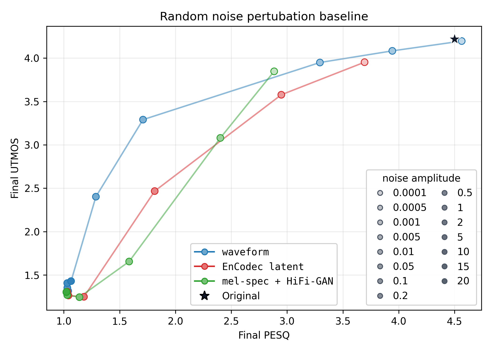
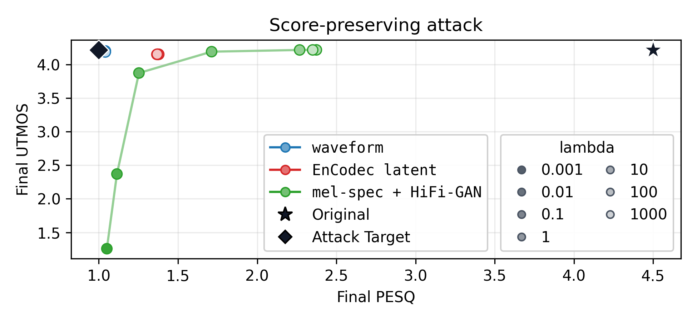
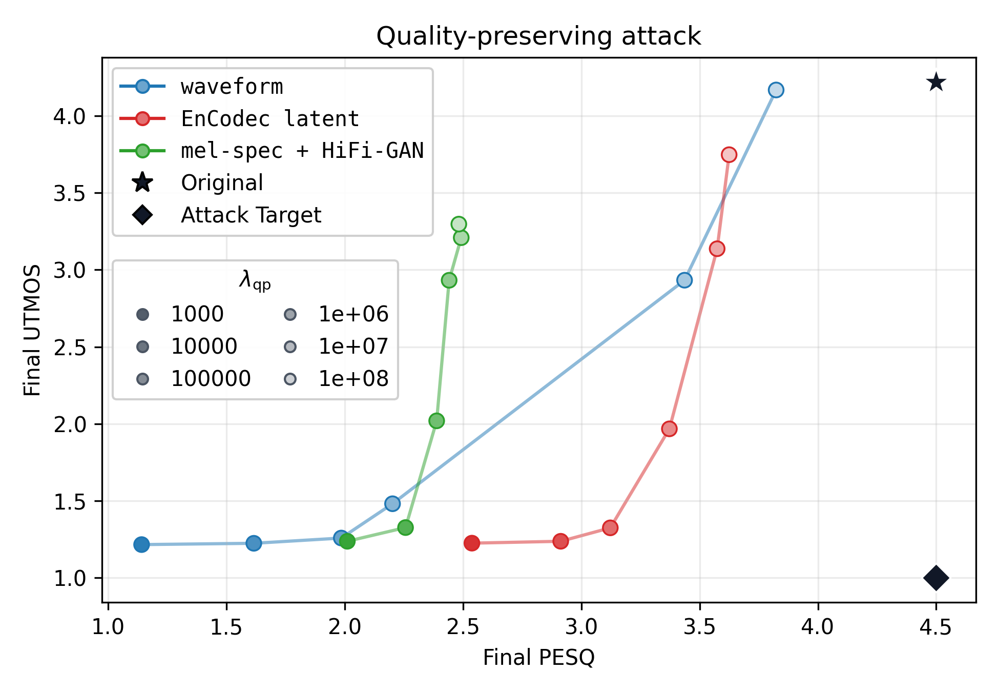

Interactive Audio Samples
Click a point on each PESQ vs. UTMOS map to compare the clean reference with the selected sample for three LibriSpeech utterances.
Noise Baseline
Gaussian noise added in waveform, spectrogram, or EnCodec latent space.

Score-Preserving Attack
Adversarial samples optimized to keep UTMOS high while lowering perceptual quality.

Quality-Preserving Attack
Adversarial samples optimized to lower UTMOS while preserving perceptual quality.
